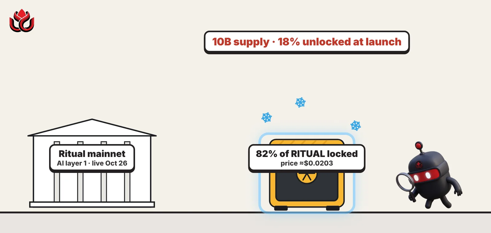
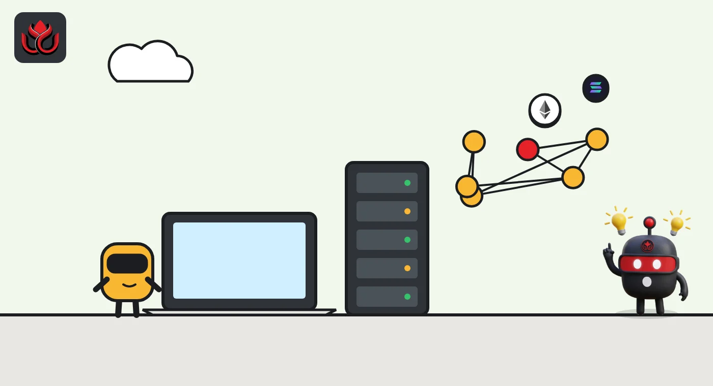
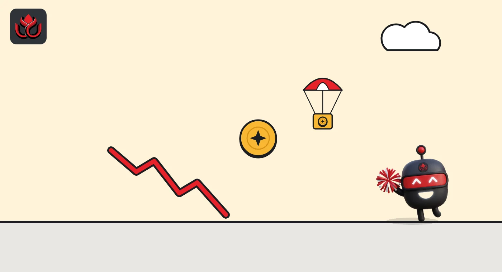

Ritual's AI blockchain is live, but 82% of its token is locked. RITUAL sits near 2 cents
The AI-focused layer 1 launched on October 26, 2026, with 10 billion RITUAL tokens and no supply cap. Only 18% is unlocked, the airdrop is just 0.5%, and a week later the token trades near $0.0203.

Key points
- Ritual launched its mainnet on October 26, 2026, with 10 billion RITUAL and no maximum supply; 18% was unlocked at launch.
- Most unlocked tokens sit in ecosystem and foundation funds; the community airdrop is 0.5% of supply.
- CoinGecko showed RITUAL near $0.0203 on November 2, between a high of $0.02809 and a low of $0.01822. Insider unlocks start from late October 2027.
Mainnet and token go live
Ritual, a blockchain built so AI models and software agents can run and pay for things on-chain, launched its public mainnet on October 26, 2026, the Ritual Foundation announced. It is a layer 1, meaning its own base chain rather than one built on top of another.
The native token, RITUAL, launched with it. The foundation's tokenomics page sets the initial supply at 10 billion RITUAL, with no maximum supply. It says 1.8 billion tokens, or 18% of the initial supply, were unlocked at launch.
Trading started on centralized exchanges. On November 2, CoinGecko listed RITUAL spot markets on Gate, Coinbase Exchange, MEXC and BitKan, plus perpetual futures on Ourbit, MEXC and KCEX. Gate's RITUAL/USDT pair had about 83% of spot volume.
What Ritual is
Ritual started as Infernet, a network of nodes that ran AI inference (when a trained model produces an answer) and delivered results to smart contracts. It now has its own chain. Before mainnet, its testnet community deployed more than 2,000 agents and sent over 90 million transactions, the foundation said.
The pitch is that agents need three things in one place: an identity with permissions, a way to pay for their own running costs within set limits, and proof of what they did. Ritual puts AI models, web calls and settlement on one chain, so developers need no outside oracle or bot to trigger jobs.
The token does the paying. According to the tokenomics page, RITUAL covers standard gas, the fees that keep agents running, AI inference priced per model, web calls priced by size, and scheduled calls. Validators stake it to secure the chain, and holders can delegate to them. The nodes that run AI jobs, called AI executors, work inside secure hardware enclaves and are paid from balances that users prepay on-chain.
RITUAL also exists on BNB Smart Chain and Base at the same contract address, 0x256Ea35422b2F36B24aC1D66159Fe69e75918C37. The foundation says these are bridged through LayerZero and that the bridged tokens are locked on the Ritual chain, so they do not add to total supply.

Who holds RITUAL
Core contributors hold the largest share, 29% of the initial supply. Ecosystem growth and research take 25%, network participation and future incentives 14%, investors in Ritual Labs 11.3% and the Ritual Foundation 10%. The Labs treasury has 5%, grants for outside AI labs 4.7% and a foundation private sale 1%.
The 18% unlocked at launch came from three buckets, the foundation says: 12.5% of supply from ecosystem growth and research, 5% from the foundation treasury and 0.5% from the community airdrop. The airdrop is 50 million RITUAL for Infernet node operators, users of the early Frenrug agent and longtime community members. So most of the tradable supply on day one sits in foundation-controlled funds, not with airdrop recipients.
Supply will change over time. The foundation says the network issues about 5% a year in staking rewards at first, and that the base fee of every transaction is burned, as on Ethereum. CoinGecko lists a 10 billion maximum supply, which differs from the foundation's own statement that supply is uncapped.
RITUAL initial allocation
% of 10 billion RITUAL
Source: Ritual Foundation tokenomics
How the price has traded
CoinGecko's daily data for RITUAL begins on October 28, two days after launch. On November 2, it showed an all-time high of $0.02809 and an all-time low of $0.01822, with the token near $0.0203, about 28% below the peak.
At about $0.0203, CoinGecko valued the 1.8 billion circulating tokens at roughly $36.5 million, and the full 10 billion at about $203 million (the fully diluted valuation). Trading has thinned: 24-hour volume was about $550,000 on November 2, against about $1.8 million on October 30.
RITUAL daily close, CoinGecko
US$
Source: CoinGecko RITUAL historical data, dates in UTC, accessed November 2, 2026

When insiders can sell, and who decides
All insider tokens are locked for at least one year from mainnet launch, the foundation says. Labs investors unlock 50% at the one-year mark and the rest monthly through month 24. Core contributors unlock either 50% or 33% at one year, with the remainder monthly through month 24 or 36. The last tokens unlock four years after launch. Locked tokens cannot be staked or used to vote.
The 13.5% of supply reserved for future network programs is locked for 15 months, then unlocks monthly through month 48. The ecosystem fund's locked half unlocks monthly over four years.
Governance starts centralized. For six months, the foundation and core developers decide, while a public proposal process is set up. From month six, stakers cast nonbinding votes on major proposals. From month 12, the plan is for those votes to become binding, starting with upgrades and network settings. The foundation calls these months targets, not deadlines, and says it holds some admin powers at launch that it will later hand to a security council and then to stakers.
Timeline
Ritual public mainnet and RITUAL token go live
First day of RITUAL data on CoinGecko, close $0.02074
24-hour volume near $1.8 million, per CoinGecko
RITUAL near $0.0203; market cap about $36.5 million
Stakers begin nonbinding votes on major proposals
Earliest one-year unlock for insiders
Risks for holders
- Open-ended supply. Issuance of about 5% a year will add tokens unless burned fees catch up.
- Small airdrop. At 0.5% of supply, the community allocation is tiny next to the 40.3% held by core contributors and Labs investors.
- Concentrated trading. Most spot volume runs through one exchange pair, so prices can move on small orders.
- Unlock cliff. Contributor and investor tokens can start unlocking from late October 2027.
- Product still unproven. On-chain AI demand is a thesis. Mainnet usage data will matter more than launch-week price.
LC Insight analysis
This section is our reading of the facts above, not a statement of fact.
- We think Ritual shows the gap between story and float. AI is one of crypto's strongest themes, but a market can only price what is unlocked, and here 82% is not.
- Most unlocked supply sits in ecosystem and foundation funds. How the foundation spends or sells those tokens will likely move the price more than airdrop selling did.
- Usage is the real test. If developers ship AI apps on Ritual in the coming months, the token has a story beyond listings. If not, the 2027 unlocks will weigh heavily.
What's next
- Mainnet activity: agents deployed and AI calls made on Ritual
- Actual issuance and burn figures once staking is running
- Launch of the public governance proposal process
- Further exchange listings beyond Gate, Coinbase and MEXC
Disclaimer. This article is based on public information and the sources listed below as of the update time shown. It is for information only and is not investment, legal or tax advice. Figures may change as companies and authorities publish new data.